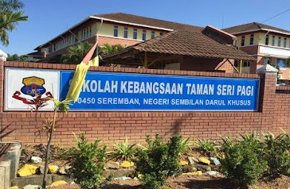
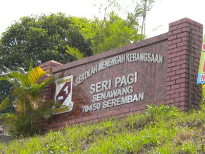
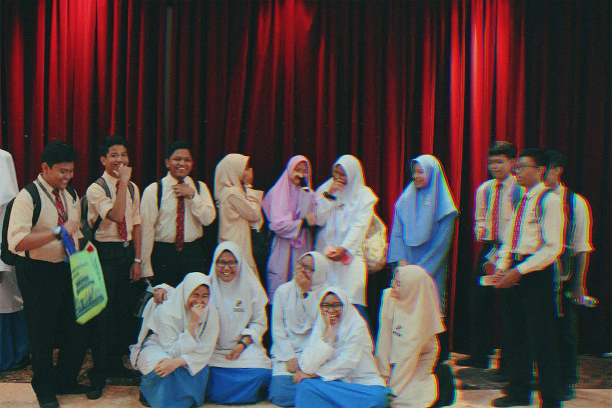
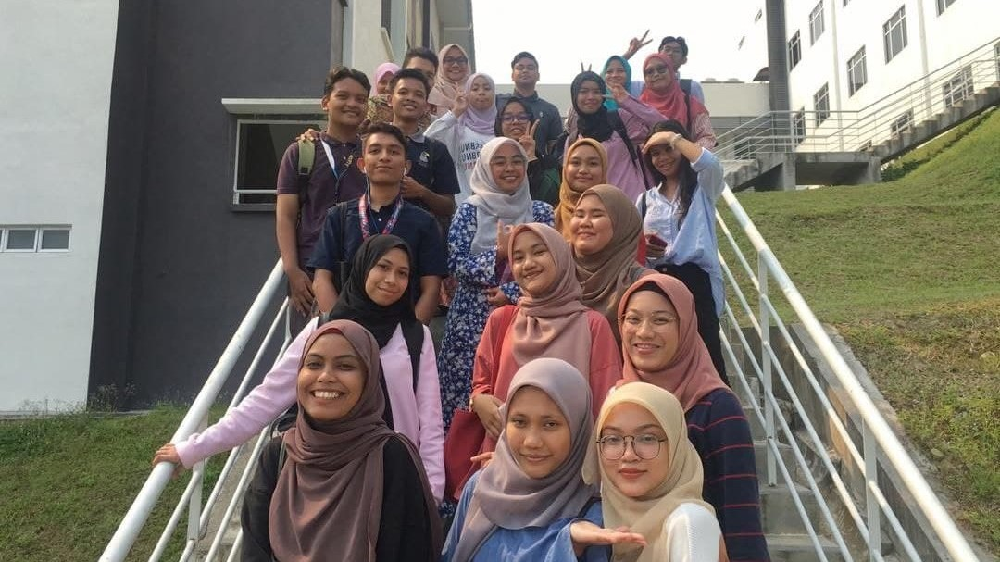

In 2006, for kindergarten I was enrolled in a daycare programme called Smart Reader Kids. I'm glad my parents
enrolling me in this programme because I think I learned a lot of the english language here. It contributes
a lot to my comprehension skills right now when I am in university. In 2008, I went to SKTSP or short for Sekolah Kebangsaan Taman Seri Pagi in Senawang. I can just walk from my house to
the school because it is close. It takes less than 10 minutes. I don't have any pictures here or maybe I have
but I can't find it.
When I turn 13 years old, I studied at Sekolah Menengah Kebangsaan Seri Pagi (SMKSP). I'm close with my
classmates in Form 4 and 5, considering that we have been classmates for 2 years since Form 4.
Our class, 5 Lavender consists of 9 girls and 8 boys. Every class have different elective and for our class is
'Lukisan Kejuruteraan' (LK) elective. We don't have that many people in our class. Therefore, we act like
siblings to each other. In July 2019, I entered the realm of University. I'm currently studying at UiTM Cawangan Negeri Sembilan,
Rembau Campus. There are some of my schoolmates that I personally close to enter the same campus
as me. However, we don't enrol in the same course. However, I get to know other people and still getting to know each other until now.

- 2006.

- 2008.


- 2013.

- 2019.
Copyright © 2021-2022 Husna. Created and designed by Amirah Husna Binti Zakaria.